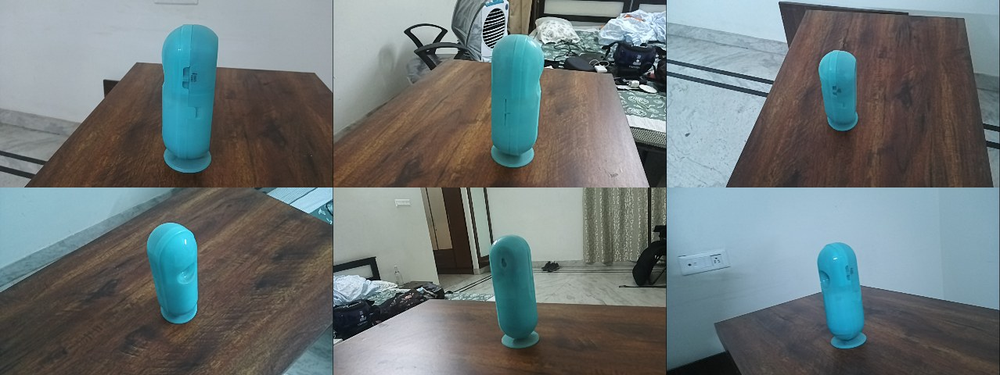
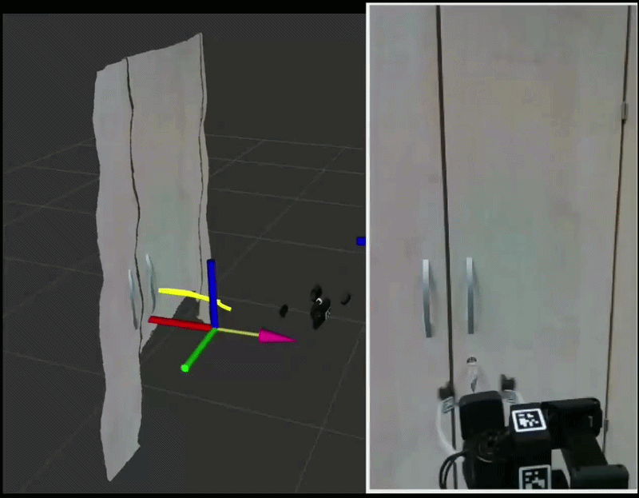

GaloreX Robotics · Physical AI
We build the whole pipeline for physical AI: wearables that record the touch cameras can't see. An operator network collecting demonstrations across India, annotation pipelines that turn raw video into training-ready data, and training and deploying robot action models on real hardware.
Request a sample dataset →01 · The pipeline
02 · Collection & annotation
Partner vendors and our in-house operations team record manipulation demonstrations across India, with gloves, UMI grippers, and other open-source rigs.
Every episode ships as robot-learning datasets and environments, in the standard formats teams already train on.
03 · Simulation track
Ship a camera, not a robot. Photograph the objects at your site and we return watertight, physics-ready twins for Isaac Sim (USD + PBR), MuJoCo, Gazebo, or plain GLB. We also use raw data from real factories to build realistic simulation assets for validating trained manipulation policies.

04 · From data to deployed policy
Our diffusion trajectory policy learns manipulation directly from egocentric human video. No teleoperation, no lab capture.
Talk to us about a pilot →
05 · Team
Research · India
We're looking for ambitious people who take ownership: researchers in robot learning and simulation. If that's you, write to us.
Partners · SF & everywhere
We collaborate with robotics teams and labs on pilots, data, and research across globe. Deployments run in our partner factories.